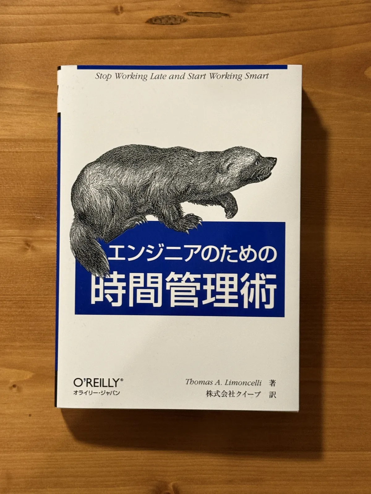
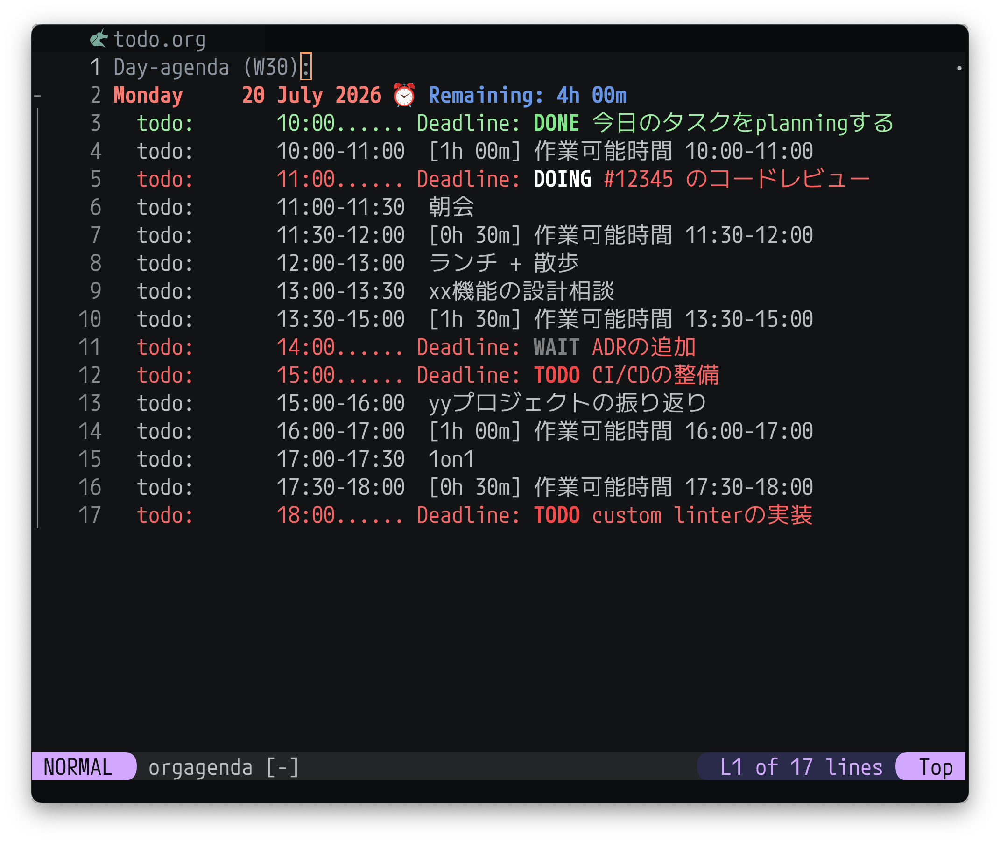
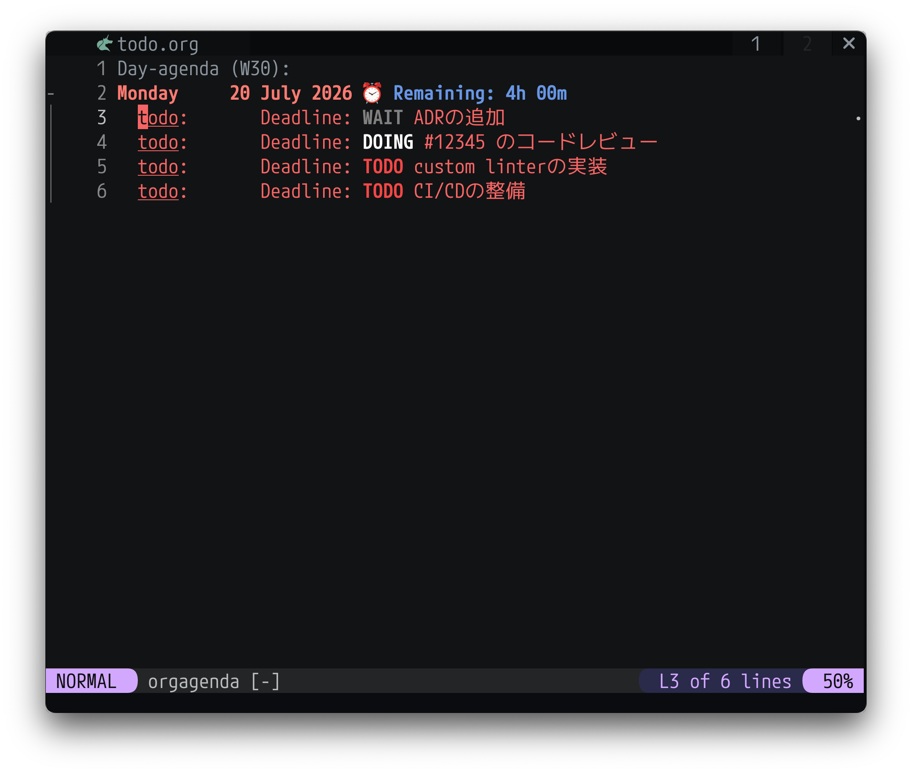
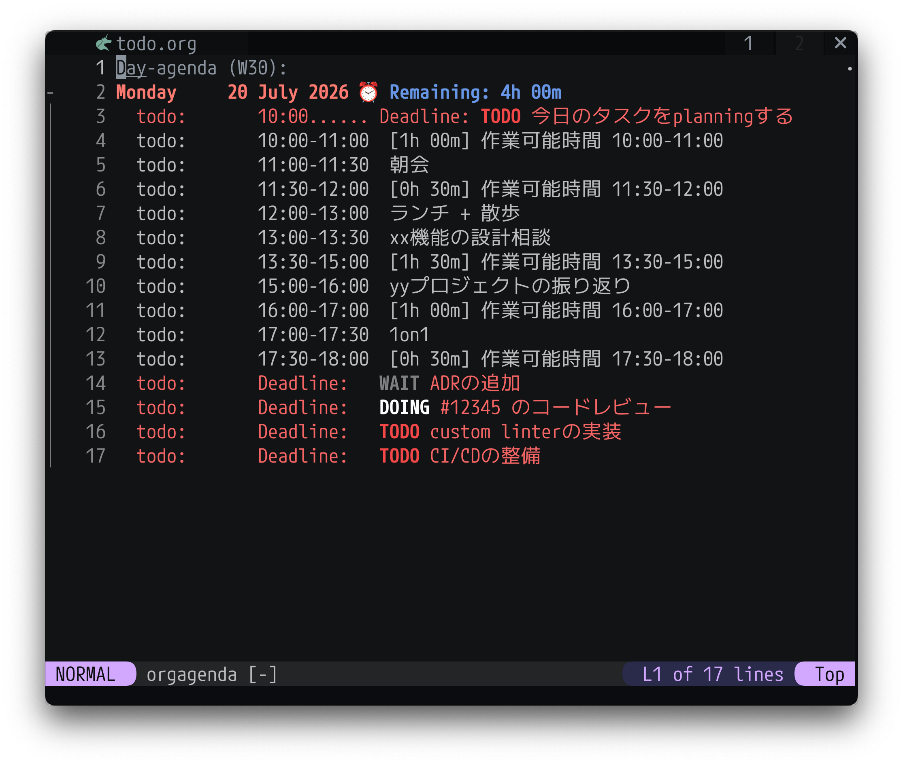
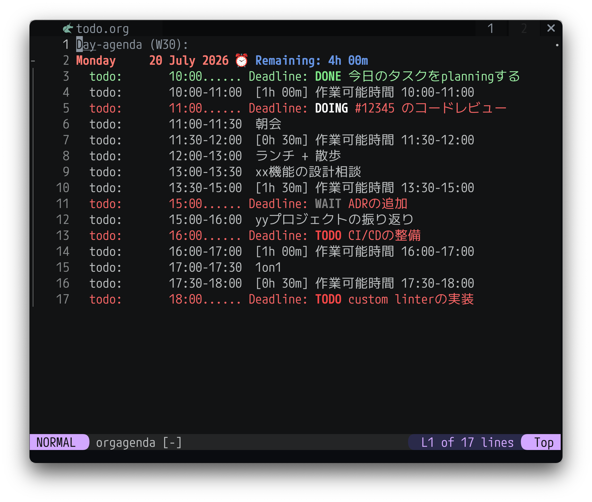
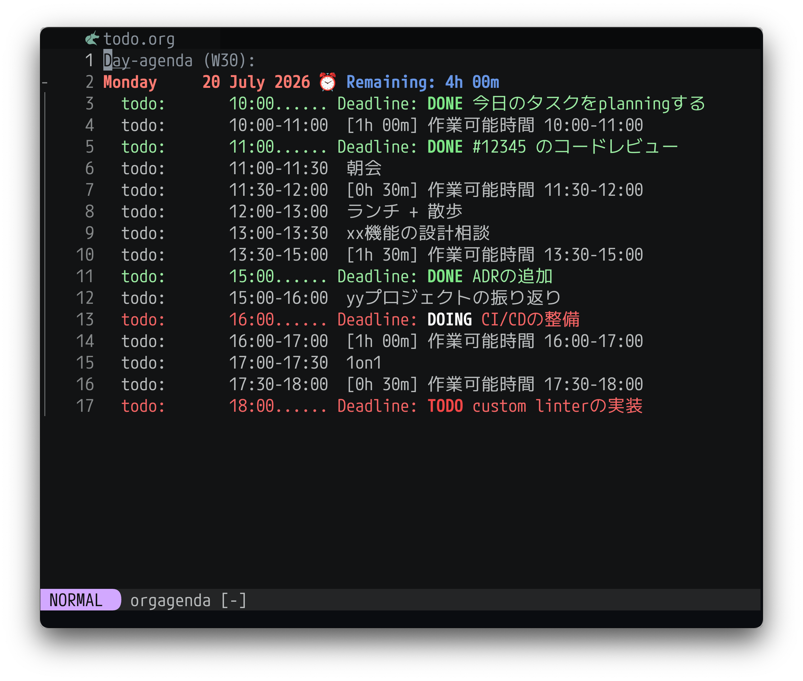

『エンジニアのための時間管理術』を読んだ

タスク管理についてもう少しいい感じにしたいなーというぼんやりとした課題感があったので、何か参考になることが書いてあるかも、と思いエンジニアのための時間管理術を読んでみた。

参考になったところをまとめておく。なお引用部分末尾の(P8)のような数字は引用部分のページ番号を表す。

プロセスを信頼する#
本書のいくつかの章では、毎朝5分間かけて1日の計画を立てることを勧めています。皮肉なことに、忙しい日ほどその5分間を削ってしまいたくなりますが、そういうときこそ、5分間の計画が最も効果を発揮するのです。筆者は「プロセスを信頼しろ」と自分に言い聞かせて、計画を立てています。そしていつも、そうしておいてよかったとあとから実感するのです。
「後回しにしよう」とか、「1日の計画を立てるのに5分間もかけている暇はない」といったマイナス思考に支配されているときでも、モットーには、頭をポジティブ思考に切り替え、マイナス思考を追い出す力があります。(P8)
忙しい日こそプランニングが重要になるので、例外なく毎日その日の計画を立てるのが重要そう。
あとは書かれている通りだが、忙しくて気持ちに余裕がないときでもルーティンを守れると自己効力感が湧いてきたり小さな達成感を感じてポジティブな気持ちになったりするのでその意味でも毎日ちゃんとやるのは大事そう。
毎日無理なく続けるための工夫としては自動化できる部分は自動化して少ないエネルギーでタスクを管理できるようにしたり、お気に入りの道具を使ったりするのが大事なように思う。自分の場合はキーボードだけで操作できるUIが好きなのでNeovim上でタスクを管理している。(詳しくは次のセクションで説明する)
人によってはお気に入りの紙とペンを使ったり、Notionを使ったり、それ用のデスクトップアプリを自作したりするのもいいかもしれない。
サイクルシステム#
P65付近では、著者が10年以上にわたって実践しているタスク管理手法である「サイクルシステム」について説明されている。気になる方は本書を読んでいただくとして、ここで紹介されているアイディアのうち、自分が取り入れているのは主に以下。
- タスクとその日のスケジュールを一箇所で管理する
- 1日の始めにその日取り組むタスクとその完了予定時刻を記入する
- 1日の終わりに未完了のタスクを次の日のタスクとして持ち越す
これを自分はnvim-orgmode/orgmodeという、org-modeを再現したNeovimプラグインを使って実現している。

上の画像のような感じで、その日の
- タスク名とその完了予定時刻、
TODO/DOING/WAIT/DONEなどのステータス(上の画像では赤または緑で表示されている行) - ミーティングなどの予定
- 作業可能時間
- 作業可能時間のうち現在の残り時間(L2の
⏰ Remaining: 4h 00mのようなやつ)
を表示するようにしている。
自分は以下のような流れで使っている。1
1. 初期状態#

初期状態は上の画像のような感じで、前日の夜時点で翌日に移動したタスクだけが表示されている。
2. その日の予定を登録#

1日の始まりにその日の予定を反映する。2具体的な処理は以下。
- icalBuddyを使ってmacのCalendar.appからその日の予定を取得する
- その日の予定からその日作業に使える時間(≒ミーティングがない時間の合計)を算出する
1.と2.に加えて今日のタスクをplanningするというタスクをnvim-orgmode/orgmodeが認識できるformatで出力する
3. 各タスクの完了予定時刻を記入#

その日の作業可能時間を踏まえて、その日に完了したいタスクの完了予定時刻を登録し、今日のタスクをplanningするをDONEに変更する。
4. タスクを進める + 終わらなかったものは翌日に持ち越す#

あとはこんな感じで適宜タスクをDONEにしていき、1日の最後に残ったタスクは次の日に持ち越す3、という流れで進めている。
今のところの所感#
春頃までは完了予定時刻を入れたり、その日の作業可能時間を計算したりしておらず、1日の終わりになってやっと危機感から仕事の集中力が上がってくる、というあまりよくない感じの日が多かった。
3ヶ月くらい今の方法で運用してみているが、タスクの完了予定時刻を入れるようにしてから、各タスクの完了予定時刻までに終えられるようにタイムアタックしている感覚になり、集中力が増した気がしている。
タスクごとの時間管理をする、というアイディアが自分にとってはこの本での一番の発見だった。(人によっては当たり前のようにやっているとは思うが自分はこれまでちゃんとできていなかった)
タスクの進め方#
1つの作業を終えたら、次の作業を開始します。勢いを持続させてください。(P79)
作業項目をリストの先頭にあるものから片付けていくことは、先延ばしを避けるためのよい方法です。(P120)
1日の始めにその日のタスクプランニングをしたら、あとは上から勢いをもってひたすら片付けていく。
書いていて思ったがこれも意外と実践できておらず、途中で軽めのタスクを挟んだりしたくなりがち。機械的に上から進めるようにしばらく意識してみる。
誰かに状況を説明することはストレスの解消になる#
誰かに状況を説明することは、ストレスの解消にはもってこいです。何のアドバイスも得られなくても、少なくとも聞いてもらえたという気持ちになります。多くの場合は、それで気持ちが軽くなります。(P137)
誰かになにかをはっきりと説明すると、問題を解決するのに役立ちます。誰かに問題を説明していて、その解決策に気付いたことが何度あるでしょう。(P137)
以前似たような経験をしたので共感した。例えばひとりプロジェクトだとスケジュール管理もタスクの実行も自分でやる必要があるが、自分の選択に自信がないときに今の状況や取りうる選択肢とそのメリデメ、そこからなぜ何を選択したかを話すだけでかなり楽になったことがあった。
自分の状況とそこに対する選択を人に説明することで「どう考えても今の選択が一番合理的」とか「この部分は自信がない、ってことはもう少し深く考えたほうがいいかも」のような感じで自分の選択を客観視できる。
まとめ#
原著(Time Management for System Administrators)は21年前(2005年)に書かれた本のようだが、2026年現在でも参考にできる点が多く、自分のタスク管理を改善できたので読んでよかった。
272ページとそこまで文量が多くないのと、内容もわかりやすい口調で書かれておりサクサクと読むことができた。
紹介した部分以外にもいいことがたくさん書いてあったので気になった方はぜひ手に取ってみてください。
-
ちなみに、ここで紹介している機能にはnvim-orgmode/orgmode標準のものもあれば、自分でscriptを書いて追加している機能もある。 ↩︎
-
L3MON4D3/LuaSnipというsnippet pluginを使って実現している。 ↩︎
-
もちろんプロジェクトによっては、ただ翌日に持ち越すだけではなく、プロジェクトのステークホルダーにQCDの相談をする必要があるケースもあるとは思います。 ↩︎